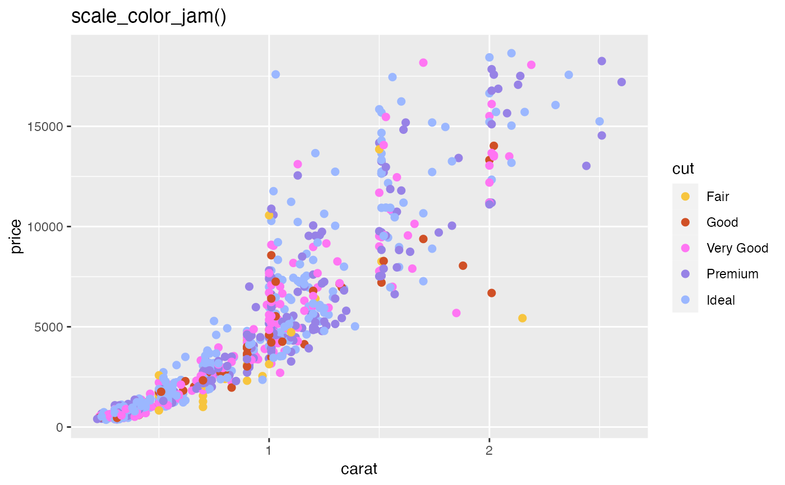
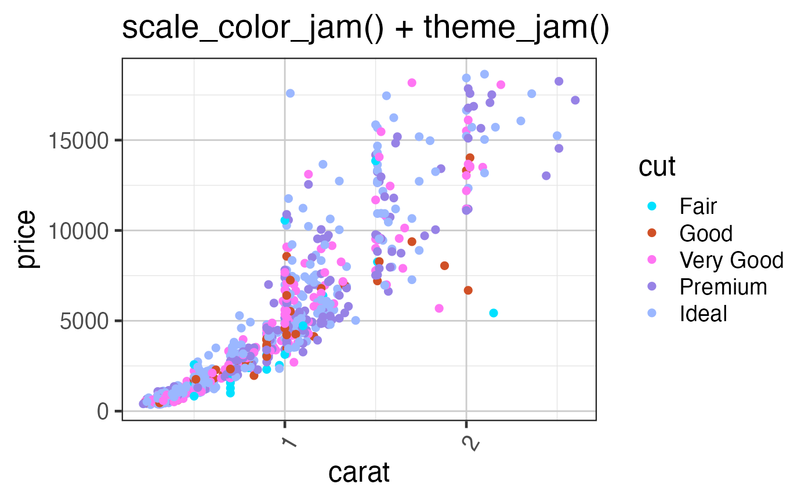

Jam default theme for ggplot2
theme_jam( theme_default = ggplot2::theme_bw, base_size = 18, grid.major.size = 0.5, grid.minor.size = 0.25, strip.background.colour = "grey30", strip.background.fill = "lightgoldenrod1", panel.grid.major.colour = "grey80", panel.grid.minor.colour = "grey90", axis.text.x.angle = 60, blankGrid = FALSE, blankXgrid = FALSE, blankYgrid = FALSE, resetTheme = TRUE, verbose = FALSE, ... )
| theme_default | function representing a ggplot2 theme. |
|---|---|
| base_size | default font point size, used for scaling the overall text sizes larger or smaller. |
| grid.major.size, grid.minor.size | the line width for the major and minor grid lines, respectively. Set to 0 to suppress either. |
| strip.background.colour, strip.background.fill | color for the border and strip background itself when ggplot2 is using a faceted layout. |
| panel.grid.major.colour, panel.grid.minor.colour | colors for the major and minor grid lines, respectively. |
| axis.text.x.angle | numeric degrees to rotate the x-axis labels, apparently starts at 0 (horizontal) and goes counter-clockwise (to the left.) |
| blankGrid, blankXgrid, blankYgrid | logical indicating whether to have a blank grid for everything, major, or minor axis lines, respectively. Intended to make it fast and easy to remove all gridlines. |
| resetTheme | logical whether to call the function |
| verbose | logical indicating whether to print verbose output. |
| ... | additional arguments are passed to |
This function applies some default theme settings to ggplot2, mainly taking away the default grey newspaper background color, also rotates the x-axis label text to 60 degrees, to accomodate longer labels without overlaps.
Other jam color functions:
closestRcolor(),
color_pie(),
group2colors(),
jam_pal(),
matrix2heatColors(),
rainbowJam_v1(),
rainbowJam(),
scale_color_jam(),
scale_fill_jam(),
vals2colorLevels()
if (suppressPackageStartupMessages(require(ggplot2))) { dsamp <- diamonds[sample(nrow(diamonds), 1000),]; (d <- ggplot(dsamp, aes(carat, price)) + geom_point(aes(colour=cut), size=2)); print(d + scale_color_jam() + ggtitle("scale_color_jam()")); print(d + scale_color_jam() + theme_jam() + ggtitle("scale_color_jam() + \ntheme_jam()")); }